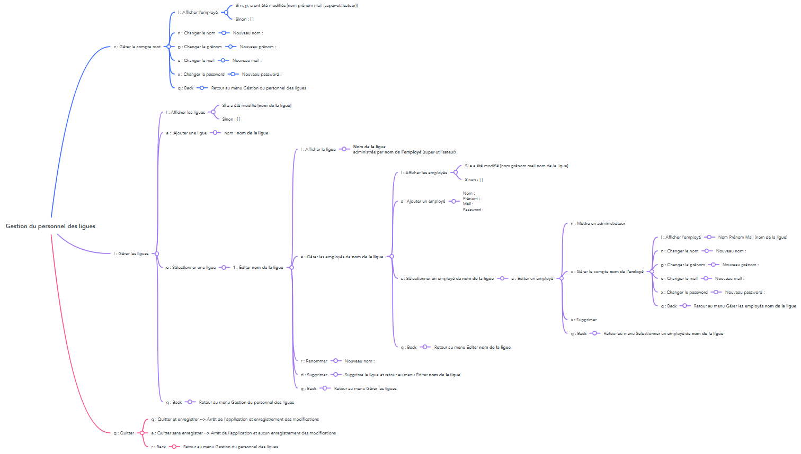
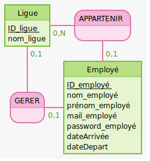

Contexte et but de l'application:
L'application nous est fournie avec des fonctionnalités limitées en lignes de commande seulement, nous devons la faire évoluer en y ajoutant plusieurs fonctionnalités.
Nous avons réalisé ce projet à deux, moi-même et ma camarade Cynthia APURA.
-
Lier l'application à une base de données :
Les simples visiteurs pourront voir le contenu partagé, sans avoir à se connecter ou s'inscrire.
-
Avoir 3 niveaux d'utilisation :
-
Un employe simple n'a aucun droit d'écriture sur l'application.
-
Un administrateur d'une ligue, lui-même employé, peut gérer les employés de sa ligue.
-
Le super administrateur quant à lui, a le droit d'écriture sur tous les employes.
-
Développer une interface graphique
C'est à partir de cette interface que les administrateurs pourront gérer leurs employés.
Etapes de réalisation de l'application :
Pour réaliser le projet, nous avons suivi les étapes suivantes:
-
Rédaction de l'arbre heuristique correspondant à l'application :
Cela nous a permis de regroupes et d'ordonner toutes les fonctionnalités déjà présentes dans le projet, et de comprendre ce qui était attendu de nous.

-
Modélisation puis création de la base de données à l'aide du MCD :
Le MCD que nous avons rédigé est le suivant:

Nous avons ensuite rédigé un script de création de table, et créé notre table mysql.
-
Ajout des différentes fonctionnalités :
En utilisant Git comme outil de versionnement, nous avons ajouté, en java, plusieurs fonctionnalités:
-
Ajout des dates d'arrivée et de départ pour les employés,
-
Contrôle des différents constructeurs getteurs et setteurs avec des tests unitaires,
-
Lier le projet à la base de données avec JDBC,
-
Possibilité d'ajouter des employés, des ligues et des administrateurs en base de donnée en ligne de commande et de les lire depuis la base.
-
Possibilité de modifier ou de supprimer des éléments présents en base depuis la fenêtre de dialogue.
-
Pouvoir choisir un administrateur par ligue, qui est par défaut, le super administrateur.
-
Réalisation de la maquette pour l'interface graphique :
Nous avons réalisé la maquette à l'aide de figma.

-
Développement de l'interface graphique :
Pour la dernière étape du projet, il faut développer une interface graphique.
Nous le faisons en utilisant javaFx.
Fiche descriptive de la réalisation en pdf
Page GitHub de la réalisation